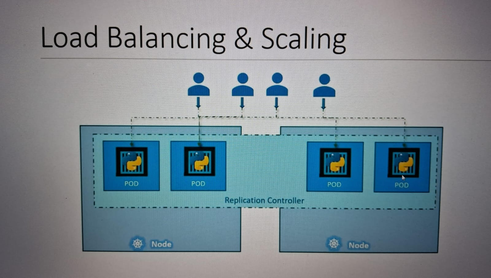
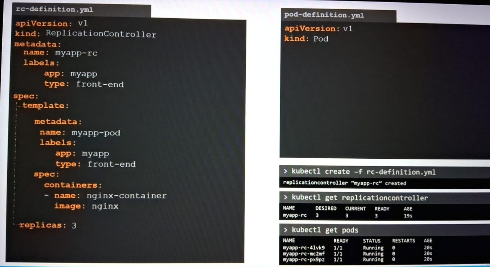
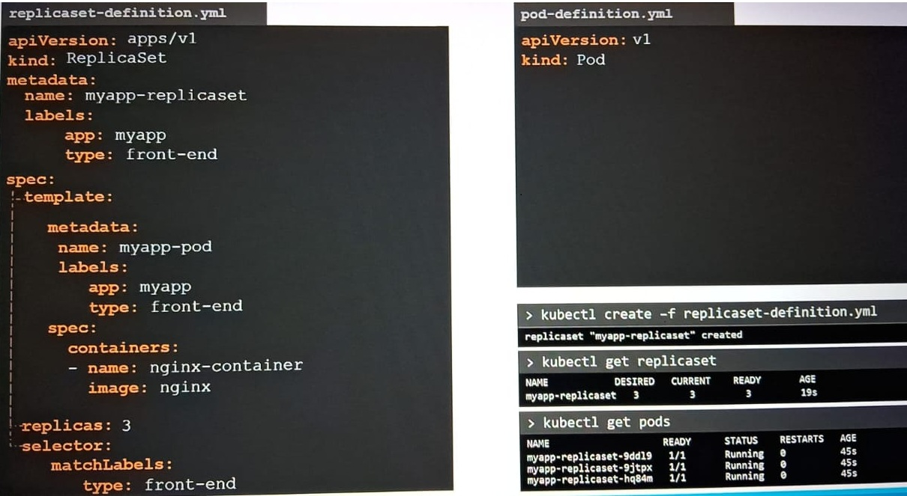

Replication controller is old technology and replica sets is the new technology.
Now we use only Replicasets , which is similar to Replication Controller.
Comparison :
Replication control maintains the number of pods in config file.
It will be only responsible for those pods which are created by replication controller, if any issue happens , it will only recreate number of pod which are mentioned in config yaml file.
On the other hand, Replica sets maintains the number of pods in config file with selector to label mentioned in pods.
There is a selector mentioned in the replica set it will not only creates the number of replica mention in yaml. but also considered the pod preset already in the cluster running with same label mentioned in selector.
We can see the difference in the api version and selector in below images , between Replicasets and Replication Controller
Replication Controller :
Replicaset :
